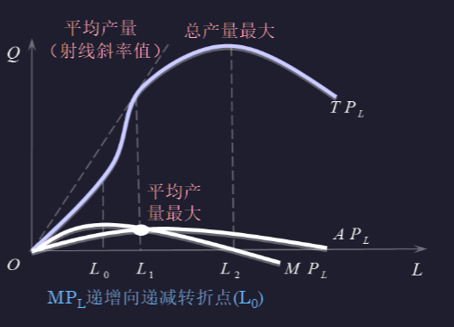
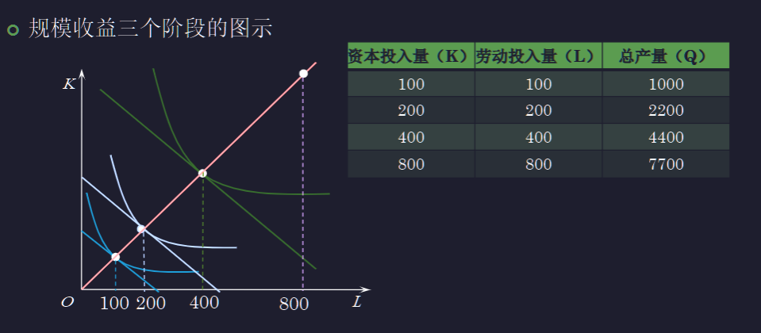
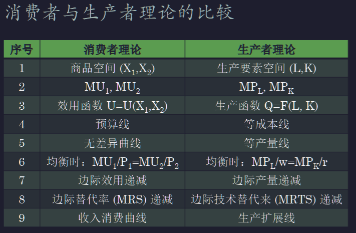
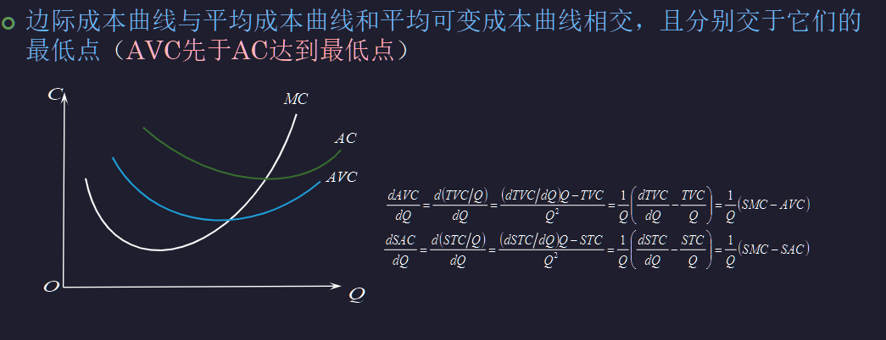
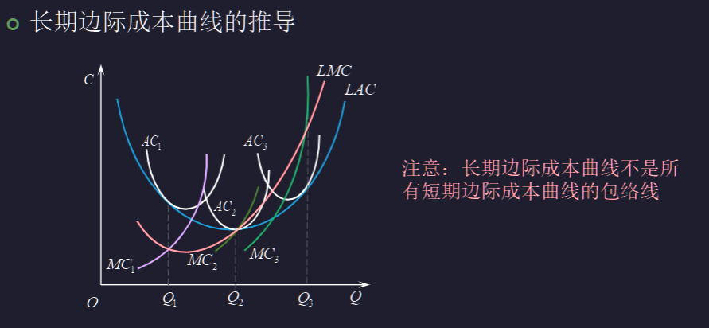
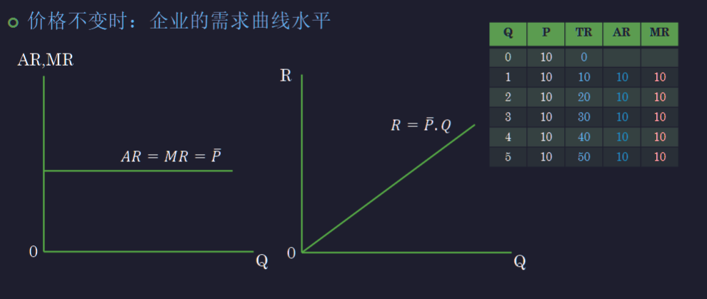
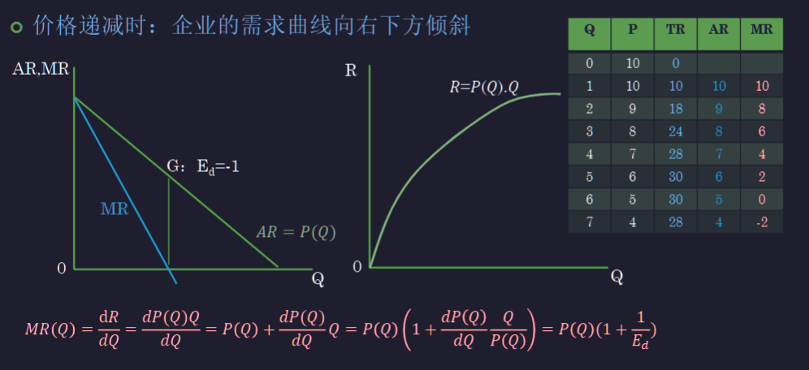

Chap.03 生产者行为理论
企业与企业的本质¶
约 3450 个字 预计阅读时间 9 分钟
- 使用生产要素并将其组织起来生产并销售产品或提供劳务的机构
- 交易成本：交易时的选购，配送，售后等
- 企业可以降低交易成本
生产分析¶
- 生产：将投入转换为产出的过程
- 产品：有形或无形提供效用
- 投入：资本、劳动、土地、企业家才能
- 劳动：生产中一切体力和脑力的消耗
- 资本/资本品：厂房、机器设备等
- 土地：土地本身和一切相关的自然资源
- 企业家才能：企业家经营企业的组织、管理和创新能力
生产函数¶
- 一定时期内，技术水平不变的情况下，最大产出随着投入的变化而变化
- 一般表示 \(Q=F(X_1,X_2, \dots,X_n)\)
- 如果只考虑两种要素，劳动和资本投入 \(Q=F(L,K)\)
固定比例生产函数¶
- 里昂惕夫生产函数，生产要素需要按照比例搭配
- \(Q=min\{\frac{L}{a},\frac{K}{b}\}\)
- 产量取决于较少的生产要素
可变比例生产函数¶
- 可以采用不同的资本和劳动组合的比例
- 资本密集型
- 劳动密集型
- 农业生产，牛奶生产
柯布—道格拉斯生产函数¶
- C-D 生产函数，\(Q=AL^\alpha K^\beta\)
- \(A>0, 0<\alpha<1, 0<\beta<1\)
- A：技术水平
- \(\alpha,\beta\)：劳动和资本投入的贡献率产出弹性
- 计算弹性刚好等于 \(\alpha, \beta\)
长期和短期¶
- 短期：企业来不及调整全部生产要素的数量，至少有一种生产要素固定不变的时期
- 长期：企业能够调整所有生产要素的时期
- 对于一个复印店，买设备只需要一周，招工人签三个月，店面签一年，则对于这家复印店，长期是一年及以上
- 可变与不变或固定生产要素针对短期考虑
- 可变投入：可调整的生产要素
- 固定投入：不能或来不及调整的生产要素
短期总产量、平均产量和边际产量¶
- 短期生产函数 资本不变 \(Q=F(L,\bar K)\)
- 劳动总产量 \(TP_L=Q=F(L,\bar K)\)
- 劳动平均产量 \(AP_L=\frac{TP_L}{L}=\frac{Q}{L}\)
- 劳动的边际产量 \(MP_L=\frac{\Delta TP_L}{\Delta L}=\frac{\Delta Q}{\Delta L}\)
有这样一家咖啡店
如果只有一个店员，每个小时只能生产 5 杯咖啡，如果增加店员，禅理那个会出现什么情况？
增加几个店员，可以分工收银、清洁、咖啡制作，产量增加
如果继续增加，可能导致产量减少
边际产量递减规律¶
- 生产要素可变比例规律：存在一个生产要素最优比例，在达到这个比例之前，增加一种投入量，产量会增加；超过比例后继续投入，产量会减少
- 例如一亩地不断加大投入，也不可能养活整个世界
- 生产可能性曲线是远离原点的（凸函数)
- 前提：只有一种要素在变

总产量、平均产量和边际产量之间的关系¶
- [[微观04 1-企业的生产(1).pdf#page=13&selection=2,0,2,18|微观04 1-企业的生产(1), page 13]]
- 边际产量和平均产量
- 边际产量大于平均产量时，平均产量会增加
- 边际产量等于平均产量时，平均产量最大
- 边际产量曲线与平均产量曲线相交于平均产量曲线最大值点（GPA）
- 边际产量的变动永远快于平均产量
- 边际产量和总产量
- 边际产量大于 0， 总产量增加
- 边际产量等于 0，总产量最大
生产要素投入的合理区间¶
- [[微观04 1-企业的生产(1).pdf#page=16&selection=3,1,4,32|对于一个追求利润最大化的企业来说，生产要素的合理投入区为第二阶段]]
- 即平均产量最大，到总产量最大
长期生产函数¶
- \(Q=F(L,K)\)
- 研究的问题
- 最适合生产要素组合的确定
- 规模收益分析（两种要素同时同比例变化）
最适要素组合¶
等产量线生产无差异曲线¶
- [[微观04 1-企业的生产(1).pdf#page=22&selection=0,4,0,4|微观04 1-企业的生产(1), page 22]]
- 两种投入，达到相同的某个产量的所有点对
- 性质
- 平面内有无数条等产量线，离原点越远产量越高
- 不能相交
- 斜率为负（可替代性）
- 凸向原点，斜率绝对值递减（边际产量递减）
边际技术替代率¶
- 保持产量水平不变时，增加一单位技术投入，能够减少其他劳动投入的量。
- \(MRTS_{L,K}=-\frac{\Delta K}{\Delta L}|_{Q不变}\) 就是斜率的绝对值
- [[微观04 1-企业的生产(1).pdf#page=29&selection=18,0,23,3|微观04 1-企业的生产(1), page 29]] 注意下标和比值的对应关系
- 边际技术替代率有递减规律
等产量曲线特例¶
- 直线等产量曲线：两种要素完全替代
- 固定替代比例生产函数 \(Q=aL+bK\)
- 熟练工人和不熟练工人，熟练工人产量是两倍
- \(Q=2aL_1+aL_2\)
- 直角折线等产量曲线：固定比例的生产函数
- 固定比例的生产函数 \(Q=min\{aK, bL\}\) 注意和固定替代比例不同，不可替代
- 例如一人只能操控一台机器
等成本线¶
- 企业投入的总成本及生产要素价格既定，所能购买到的资本和劳动最大数量各种组合的连线
- \(C=wL+rK\)
最适生产要素组合的确定¶
- 成本既定的情况下产量最大
- 找到一条等产量线，与既定等成本线相切[[微观04 1-企业的生产(1).pdf#page=34&selection=0,0,0,11|微观04 1-企业的生产(1), page 34]]
- 变化的视角
- 边际技术替代率大于等成本曲线斜率时，要增大劳动投入
- 边际技术替代率小于等成本曲线斜率时，要增大资本投入
- 方程和最优解
- 均衡条件：最后一块钱用来投入资本或投入劳动的产量增加相同二者的边际产量相同
- 成本之和为总成本
- 产量既定条件下的成本最小
- 找到一条等成本线，与既定等产量曲线相切[[微观04 1-企业的生产(1).pdf#page=35&selection=1,1,2,28|微观04 1-企业的生产(1), page 35]]
- 关键方程
- 生产者均衡的一般条件：最后一单位货币得到的边际产量相等
- \(\frac{MP_L}{P_L}=\frac{MP_K}{P_K}\) 并添加条件：
- \(C=wL+rK\) 既定成本，求产量最大
- \(Q_0=f(L,K)\) 既定产量，求成本最小
生产扩展曲线¶
- 生产要素价格和技术水平不变的情况下，成本或产量增加（企业规模增加），最优要素组合点的集合
- \(MRTS_{L,K}=\frac{MP_L}{MP_K}=\frac{w}{r}\)
- 形状[[微观04 1-企业的生产(1).pdf#page=41&selection=2,0,2,10|微观04 1-企业的生产(1), page 41]]
- 资本多就是资本密集型
- 劳动多就是劳动密集型
规模收益¶
- 在一定的技术条件下，所有生产要素投入量同时同比例增加带来的产量增加
- 规模收益不变：产量增加比例 = 各种投入量增加比例
- 规模收益递增：产量增加比例 > 各种投入量增加比例
- 规模收益递减：产量增加比例 < 各种投入量增加比例

- 直线：投入比例不变
- 100 到 200，规模收益递增
- 200 到 300，规模收益不变
- 300 到 400，规模收益递减
函数表达¶
- \(Q=F(L,K)\)
- \(F(\lambda K,\lambda L)=\mu F(K,L)=\mu Q\)
- CRS (\(\lambda = \mu\)); IRS (\(\lambda<\mu\)); DRS (\(\lambda > \mu\)).
- 柯布道格拉斯函数：\(Q=AL^\alpha K^\beta\)
- \(F(\lambda K,\lambda L)=\lambda^{\alpha+\beta}Q\)
- \(\alpha+\beta>1\) 则规模收益一直递增，其他同理
规模收益递增与边际收益递减是否矛盾？
求导可以证明边际收益递减，例如 \(Q=L^{0.5}K^{0.6}\)
生产分析总结¶

成本分析¶
- 企业的目标：利润最大化
经济成本¶
- 经济成本：为了得到某种东西必须放弃的东西 最高价值的放弃，这里是企业生产中所使用资源的机会成本（经济成本）
- \(经济成本=显性成本(会计成本)+隐性成本\)
- 显性成本 会计成本：购买生产要素所花费的货币
- 隐性成本：企业使用自己所拥有的生产要素的机会成本
- 例如开店的夫妻不会计算自己的工资成本，但实际上他们可以去干别的工作，存在机会成本
- 沉没成本（Sunk Cost）：一旦发生就无法收回的成本，是任何决策都无法避免的成本，不是现有决策的相关成本，决策的时候不需要考虑 例如西瓜、共享单车和电影票
案例分析¶
- [[微观04 2-企业的成本(1).pdf#page=4&selection=2,0,2,9|微观04 2-企业的成本(1), page 4]]
- 第一题
- 会计成本：30
- 经济成本：30(1 + 5%) + 20 = 51.5
- 第二题
- 会计成本：10 + 20(1 + 5%) = 31
- 经济成本：10(1 + 5%) + 20(1 + 5%) + 20 = 51.5
- 可以发现，经济成本是一样的，会计成本会变化
- 第一题
- 如果骑共享单车收益为 2.5，扫到一辆故障车花费 1.5，是否换一辆？
- 如果不扫，损失 4
- 如果扫，损失 0.5
- 钓鱼工程
- 如果一个项目收益 18 亿，成本 20 亿
- 施工方可以报成本为 15 亿，这样国家会投
- 施工到一半再报另外 5 亿，考虑沉没成本，国家还是会继续投
经济利润¶
- 会计利润：\(销售收入-会计成本（显性成本）\)
- 经济利润：\(销售收入-经济成本=销售收入-显性成本-隐性成本\)
- 正常利润：\(经济利润=0\)；超额利润：\(经济利润>0\)
- [[微观04 2-企业的成本(1).pdf#page=5&selection=44,0,44,12|微观04 2-企业的成本(1), page 5]]
- 如果不自己用，租出去，获益增加 500，所以经济成本增加 500
短期成本¶
- 短期总成本（TC）：企业为生产既定产量所需要生产要素投入的费用
- \(短期总成本（TC）=可变成本（VC）+不变成本（FC）\)
- 可变成本：随着产量而变动的成本
- 不变成本（固定成本）：不随产量变化而变化的成本
短期总产量曲线与总成本曲线¶
- 总成本曲线 \(TC(Q)\) 图像
- 增长速度先减后增，向右上方倾斜 边际成本先减后增
短期平均成本和边际成本¶
- 平均总成本 \(AC(Q)=\frac{TC}{Q}\)
- 平均不变成本 \(AFC(Q)=\frac{FC}{Q}\)
- 平均可变成本 \(AVC(Q)=\frac{VC}{Q}\)
- 边际成本 \(MC(Q)=\frac{\Delta TC}{\Delta Q}=\frac{\Delta VC}{\Delta Q}\)
求成本函数
需要写出 \(C(Q)\) 的关系
图像分析¶

- 除了 AFC，都是先减后增的 U 形曲线
- 总成本先以递减的速度增加，再以递增的速度增加 与短期产量曲线相反
- AC 逼近 AVC，这是因为 AFC 不断减小
- MC 曲线穿过了 ATC 和 AVC 曲线的最低点

平均成本与产量及边际成本与产量¶
- 平均可变成本与平均产量 \(AVC=wL/Q=w/AP\) 劳动的平均产量
- 边际成本与边际产量 \(MC=w\Delta L/\Delta Q=w/MP\) 劳动的边际产量
- 边际成本递减规律：不断增加可变要素的投入，边际成本开始时递减规模效应，要素投入上升到一定程度时递增 边际产量递减效应
长期成本¶
- 长期总成本（LTC）：长期调整下，对于一定的产量，达到的最低成本 生产扩展线
- 长期平均成本（LAC）：\(LAC=LTC/Q\)
- 长期边际成本：\(LMC=\Delta LTC/\Delta Q\)
长期总成本（LTC）曲线¶
- 在所有短期总成本曲线下方，每一点都和一条短期总成本曲线相切，是包络线 \(LTC=\min\{TC_i\}\)
- 由于没有固定成本，经过原点
- 比短期总成本曲线都平缓
长期平均成本（LAC）曲线¶
- 每一产量的所有短期平均成本中最低的成本，\(LATC=min\{SAC\}\)
- 是包络线，但不是所有最低点的连线
- 为什么不是最低点？最低点的连线其实不是最优解
长期边际成本（LMC）曲线¶
- 同样有边际经过平均的最低点
- 不是短期边际成本曲线的包络线
- 对于每个被选择的短期平均曲线，找到这一切点对应的边际成本点作垂线，然后再扩展

规模经济、规模不经济和最适规模¶
- 规模经济：ATC（平均成本） 下降
- 规模不经济：ATC（平均成本） 上升
- 最适规模：企业处于长期平均成本最小时的规模
规模收益递增和规模经济¶
- 规模收益递增：生产要素必须同时同比例增加
- 规模经济：生产要素不一定同比例增加
- \(规模收益递增\subset 规模经济\)，规模经济与规模收益递增不完全对应 [[微观04 2-企业的成本(1).pdf#page=28&selection=16,0,16,33|微观04 2-企业的成本(1), page 28]]
- 表中 2，既是规模经济，也是规模收益递增
- 表中 3，是规模经济，但不是规模收益递增
- [[微观04 2-企业的成本(1).pdf#page=29&selection=2,0,2,13|微观04 2-企业的成本(1), page 29]] 规模经济的扩展范围更广，但是规模收益递增只能沿直线
规模经济分析（理由符合逻辑即可）¶
- 规模经济的原因：生产专门化、管理专门化、设备的充分利用、技术进步、行业特征、规模便利、范围经济生产多种相关的产品
- 规模不变：任何要素的潜能发挥极致各行各业有最适规模
- 规模不经济的原因：管理和协调不灵活、生产决策信息传递慢且失真、应变能力弱
企业收益¶
- 总收益 \(R(Q)=P*Q=P(Q)*Q\)
- 平均收益 \(AR(Q)=R/Q=P(Q)*Q/Q=P(Q)\)
- 边际收益 \(MR(Q)=\frac{dR}{dQ}=\frac{dP(Q)}{dQ}Q+P(Q)\)
- 都是产量的函数
收益曲线¶
- 价格不变时

- \(AR=MR=\bar P\)
- \(R=\bar P*Q\)
- 价格递减

- \(AR=P(Q)\)
- \(MR=P(Q)+\frac{dP(Q)}{dQ}Q=P(Q)(1+\frac{dP(Q)}{dQ}\frac{Q}{P(Q)})=P(Q)(1+\frac{1}{E_d})\)
- 期中 \(E_d\) 是需求价格弹性，是负的
- 复习：上半段富有弹性，弹性大于 1；下半段缺乏弹性，弹性小于 1
- 用来在 MR, P(Q), E_d 之间知二求三
- \(R=P(Q)*Q\)
企业利润最大化原则¶
- 利润=总收益-总成本：\(\pi(Q)=R(Q)-C(Q)\)
- 利润最大化条件：
- \(MR(Q)=MC(Q)\)
- MC 处于递增阶段，但是一般不需要考虑
- 对于完全竞争的厂商，\(P=MR=MC\)